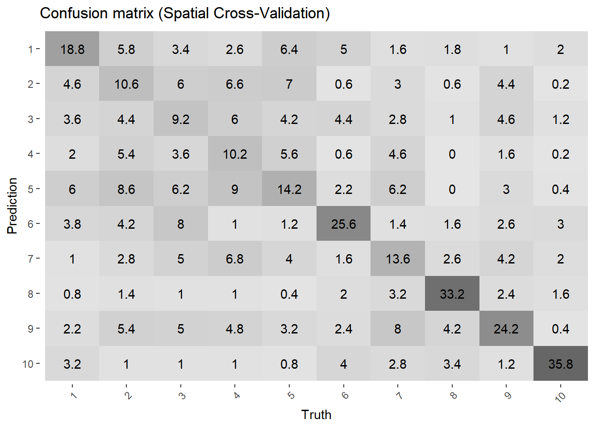
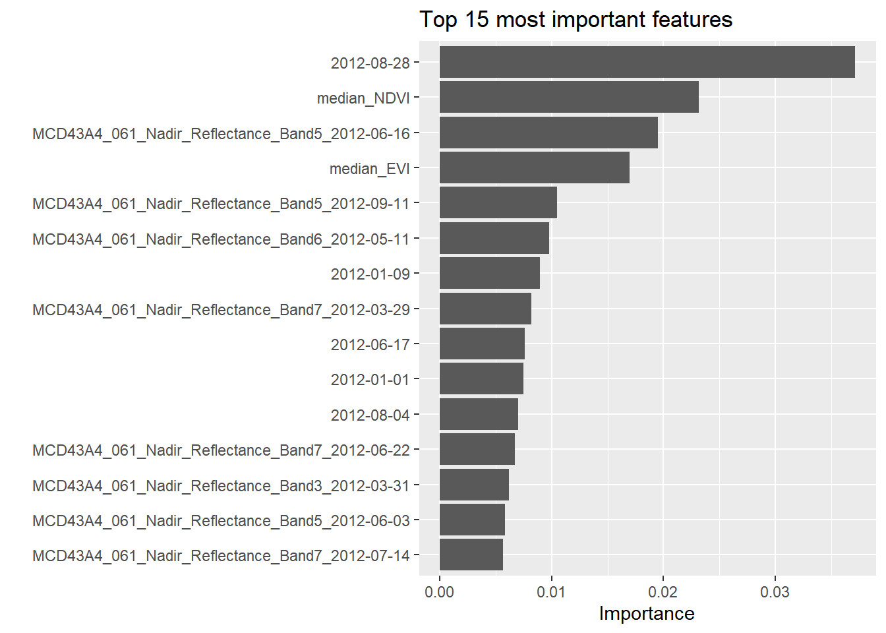
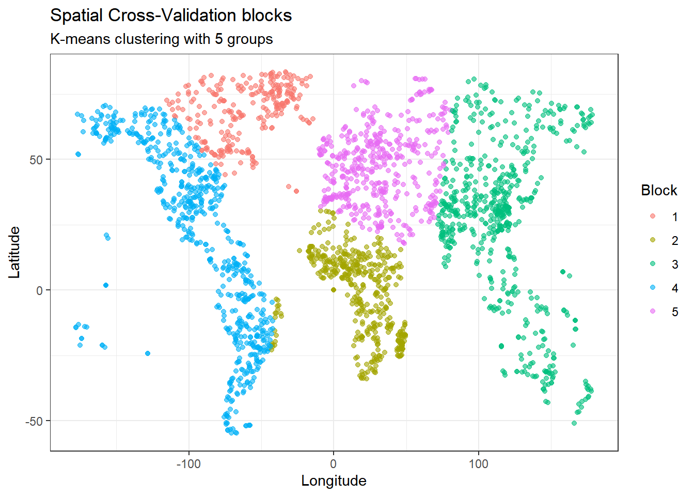
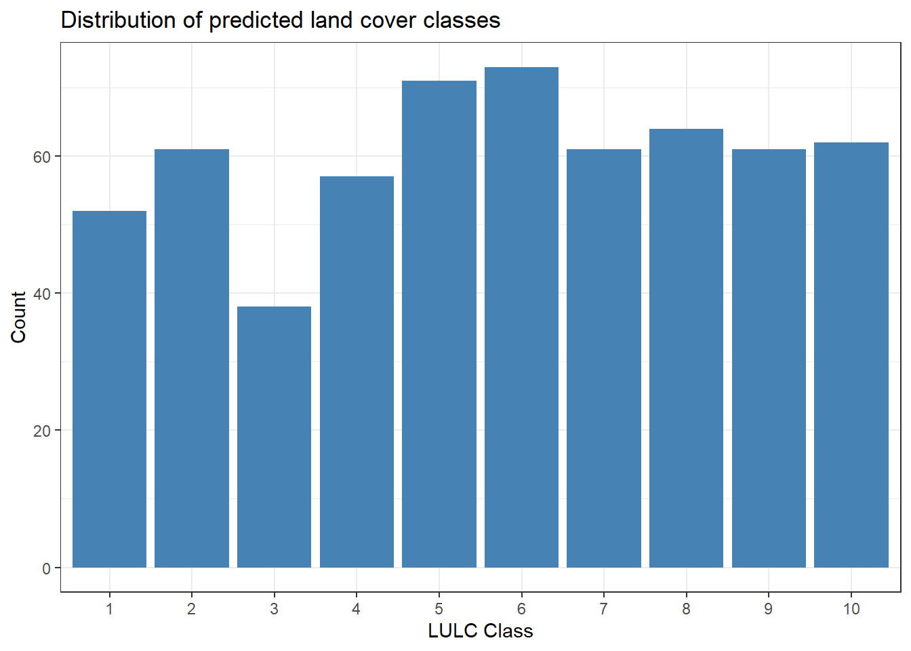

library(tidymodels)
library(tidyverse)
library(here)
library(themis)
library(parsnip)
library(tune)
library(dials)
library(workflows)
library(xgboost)
library(doParallel)
library(vip)
if (!dir.exists(here("data"))) {
dir.create(here("data"))
}Report 8.3: Land-cover classification
Introduction
Land-use and land-cover (LULC) maps aims to track land use its evolution. In order to improve classification accuracy, we are going to implement Supervised Machine Learning which improves on the general patterns identification offered by methods such as Unsupervised Clustering.
In this report, we develop a supervised classification workflow to map land cover using MODIS spectral data with a 500m spatial resolution. We would like to improve the baseline model which utilizes a standard XGBoost (Extreme Gradient Boosting) algorithm trained on raw spectral bands.
Data description
For this analysis, we use the MODIS MCD43A4 data product, which provides surface reflectance data. This product is produced by NASA Land Processes Distributed Active Archive Center (LP DAAC) and maintained by the MODIS Science Team (Schaaf & Wang, 2021).
This is a combined product that merges observations from both Terra and Aqua satellites (the two platforms carrying MODIS instruments). The key feature of this product is the BRDF correction which role is to remove the effects of sun-sensor geometry, giving us reflectance values as if we were looking straight down at local solar noon. This makes comparisons across different dates and locations easier. The product is computed daily but uses a 16-day window of observations.
Spectral Bands
MCD43A4 provides reflectance for MODIS Bands 1-7. For our vegetation indices (NDVI and EVI), we use the first three bands:
| Band | Wavelength (nm) | Region | Role in our analysis |
|---|---|---|---|
| 1 | 620 - 670 | Red | Absorbed by chlorophyll → low values for vegetation |
| 2 | 841 - 876 | Near-Infrared (NIR) | Reflected by leaf structure → high values for vegetation |
| 3 | 459 - 479 | Blue | Used in EVI for atmospheric correction |
| 4 | 545 - 565 | Green | — |
| 5 | 1230 - 1250 | SWIR-1 | — |
| 6 | 1628 - 1652 | SWIR-2 | — |
| 7 | 2105 - 2155 | SWIR-3 | — |
Validation Data
Land cover labels were obtained from the Geo-Wiki crowdsourced dataset (Fritz et al., 2017), providing 10 land cover classes with 150 training locations per class.
Proposed improvements
To increase the accuracy and robustness of the LULC model, we are going to implement the following 2 improvements:
1. Vegetation indices
The baseline model relies solely on raw reflectance bands. Even if machine learning algorithms can learns non-linear relationships, providing explicit features can accelerates the learning and improves the discrimination.
For this purpose, We will calculate and include NDVI (Normalized Difference Vegetation Index) and EVI (Enhanced Vegetation Index). It exploits the fundamental property of vegetation: chlorophyll absorbs visible red light for photosynthesis, while the cell structure of leaves strongly reflects near-infrared (NIR) light. It is highly effective at distinguishing vegetated areas (high values) from non-vegetated surfaces (low or negative values).However, it tends to saturate in very dense forests (high biomass), where the index saturates near 1.0 even as density increases.
The formula used is: \[NDVI = \frac{\rho_{NIR} - \rho_{Red}}{\rho_{NIR} + \rho_{Red}}\]
EVI is designed to optimize the vegetation signal in high biomass scenarios and reduce atmospheric effect. It includes the blue band to correct for aerosol scattering in the atmosphere and includes coefficients to adjust for the canopy background signal. Unlike NDVI, EVI does not saturate as easily in dense forests (like rain forests), making it superior for distinguishing between different forest types. But because it relies on the blue band (which is most sensitive to atmospheric scattering), it can be noisier if the atmospheric correction of the satellite data is imperfect.
The formula used is: \[EVI = G \times \frac{\rho_{NIR} - \rho_{Red}}{\rho_{NIR} + C_1 \times \rho_{Red} - C_2 \times \rho_{Blue} + L}\]
Where \(G = 2.5\) (gain factor), \(C_1 = 6\), \(C_2 = 7.5\) (atmospheric resistance coefficients), and \(L = 1\) (canopy background adjustment) following the MODIS-EVI algorithm (Huete et al., 2002).
2. Spatial cross-validation (spatial CV)
Standard K-fold cross-validation assumes that data points are independent. However, if we reference Tobler first law of geography: “Everything is related to everything else, but near things are more related than distant things” (Tobler, 1970).
In this perspective, we will implement spatial cross-validation, where the training data is split into geographic clusters (blocks) rather than random subsets. Random splitting allows training points to sit immediately adjacent to test points, leading to “spatial leakage” and overly optimistic accuracy estimates. Spatial CV forces the model to predict on geographically distinct regions, ensuring that the tuned hyperparameters generalize truly to new, unseen locations.
Additional improvements
We list 2 additional improvements that we aren’t going to implement:
3. Algorithm selection (Random Forest vs. XGBoost)
Algorithms have their own strengths and their performance depends on the specific data structure and noise profile. So an improvement could come from comparing the performance of random forest against gradient boosting. Random forest is an ensemble of bagging trees that could be more robust to noise and usually requires less aggressive tuning than boosting algorithms. By testing a different algorithm, we can determine which mathematical approach best captures the decision boundaries of this specific landscape.
Implementation
Vegetation indices
# Load data
train_df <- readRDS(here("data", "training_data.rds"))
# We calculate the Median NDVI and EVI across the whole year for each pixel.
indices_df <- train_df %>%
select(pixelID, contains("Band")) %>%
# Pivot longer to handle bands and dates
pivot_longer(
cols = -pixelID,
names_to = c("band", "date"),
names_pattern = ".*_Band([0-9])_(.*)"
) %>%
# Pivot wider to get Band1, Band2, Band3 as columns
pivot_wider(names_from = band, values_from = value, names_prefix = "band_") %>%
# We calculate Indices for every single day
mutate(
NDVI = (band_2 - band_1) / (band_2 + band_1),
EVI = 2.5 * (band_2 - band_1) / (band_2 + 6 * band_1 - 7.5 * band_3 + 1)
) %>%
# We clean bad values (infinite/NaN)
mutate(
NDVI = ifelse(is.finite(NDVI), NDVI, NA),
EVI = ifelse(is.finite(EVI), EVI, NA)
) %>%
# We calculate Median NDVI/EVI per pixel
group_by(pixelID) %>%
summarise(
median_NDVI = median(NDVI, na.rm = TRUE),
median_EVI = median(EVI, na.rm = TRUE)
)
# We join the features back to training Data
train_df <- train_df %>%
left_join(indices_df, by = "pixelID")
# Check if the new columns are there
colnames(train_df) %>% tail()[1] "2012-12-02" "2012-12-10" "2012-12-18" "2012-12-26" "median_NDVI"
[6] "median_EVI" # We convert LC1 to a factor
train_df <- train_df %>%
mutate(LC1 = as.factor(LC1))
# We define the recipe
rec_spatial <- recipe(LC1 ~ ., data = train_df) %>%
# We remove ID and metadata columns from the model
update_role(pixelID, lat, lon, new_role = "ID") %>%
# We handle class imbalance
step_downsample(LC1) %>%
# We remove variables that have zero variance
step_zv(all_predictors()) %>%
# We normalize
step_normalize(all_numeric_predictors())
# Check the recipe
print(rec_spatial)Spatial cross-validation and tuning
# We create 5 spatial blocks by using k-means on coordinates
set.seed(456)
spatial_clustering <- kmeans(train_df[, c("lat", "lon")], centers = 5)
# We add the block ID to the dataframe
train_df$spatial_block <- as.factor(spatial_clustering$cluster)
# We create the spatial fold. We split based on the block ID. Fold 1 will train on Blocks 1-4 and test on Block and so on.
spatial_folds <- rsample::group_vfold_cv(train_df, group = spatial_block, v = 5)# We define the model by tuning trees, tree depth, and learning rate
xgb_model <- boost_tree(
trees = tune(),
min_n = tune(),
tree_depth = tune(),
learn_rate = tune()
) %>%
set_engine("xgboost") %>%
set_mode("classification")
# We bundle the recipe and the model
xgb_workflow <- workflow() %>%
add_recipe(rec_spatial) %>%
add_model(xgb_model)
# We define tuning grid
xgb_grid <- grid_latin_hypercube(
extract_parameter_set_dials(xgb_model),
size = 10
)
# We define the path for saving results
tuning_file <- here("data", "xgb_tuning_spatial.rds")
# We check if results already exist
if (file.exists(tuning_file)) {
# We load pre-computed results
xgb_res_spatial <- readRDS(tuning_file)
} else {
# We set up parallel processing for faster tuning
n_cores <- parallel::detectCores()
cl <- makeCluster(n_cores)
registerDoParallel(cl)
# Run the tuning
xgb_res_spatial <- tune_grid(
xgb_workflow,
resamples = spatial_folds,
grid = xgb_grid,
control = control_grid(save_pred = TRUE),
metrics = metric_set(accuracy, kap)
)
# Stop the parallel processing
stopCluster(cl)
registerDoSEQ() # Reset to sequential
# Save results
saveRDS(xgb_res_spatial, tuning_file)
}
# Show best results
show_best(xgb_res_spatial, metric = "accuracy")# A tibble: 5 × 10
trees min_n tree_depth learn_rate .metric .estimator mean n std_err
<int> <int> <int> <dbl> <chr> <chr> <dbl> <int> <dbl>
1 1850 15 6 0.0110 accuracy multiclass 0.439 5 0.0757
2 1441 10 4 0.00241 accuracy multiclass 0.438 5 0.0703
3 759 5 10 0.00644 accuracy multiclass 0.436 5 0.0737
4 406 8 9 0.00369 accuracy multiclass 0.435 5 0.0707
5 1322 24 13 0.0252 accuracy multiclass 0.435 5 0.0737
# ℹ 1 more variable: .config <chr>The result shows a best accuracy of 43.869%. This has been achieved with trees=1850 and a learning rate of 0.01. This is a low learning rate combined with a large number of trees.
Best parameters and finalization of the model
# We define file paths to save the results
best_params_file <- here("data", "xgb_best_params.rds")
final_fit_file <- here("data", "xgb_final_fit.rds")
# Check if we already have the best parameters
if (file.exists(best_params_file) && file.exists(final_fit_file)) {
best_params <- readRDS(best_params_file)
final_fit <- readRDS(final_fit_file)
} else {
# We select the best parameters based on accuracy
best_params <- select_best(xgb_res_spatial, metric = "accuracy")
# We finalize the workflow with best parameters
final_workflow <- finalize_workflow(xgb_workflow, best_params)
# We train the model on the full training data
final_fit <- fit(final_workflow, data = train_df)
# Save
saveRDS(best_params, best_params_file)
saveRDS(final_fit, final_fit_file)
}
# Display results
print(best_params)# A tibble: 1 × 5
trees min_n tree_depth learn_rate .config
<int> <int> <int> <dbl> <chr>
1 1850 15 6 0.0110 Preprocessor1_Model04Application of the improved LULC model on test data
# Load test data
test_df <- readRDS(here("data", "test_data.rds"))
# Check structure
dim(test_df)[1] 600 2608colnames(test_df) %>% head(20) [1] "MCD43A4_061_Nadir_Reflectance_Band1_2012-01-01"
[2] "MCD43A4_061_Nadir_Reflectance_Band1_2012-01-02"
[3] "MCD43A4_061_Nadir_Reflectance_Band1_2012-01-03"
[4] "MCD43A4_061_Nadir_Reflectance_Band1_2012-01-04"
[5] "MCD43A4_061_Nadir_Reflectance_Band1_2012-01-05"
[6] "MCD43A4_061_Nadir_Reflectance_Band1_2012-01-06"
[7] "MCD43A4_061_Nadir_Reflectance_Band1_2012-01-07"
[8] "MCD43A4_061_Nadir_Reflectance_Band1_2012-01-08"
[9] "MCD43A4_061_Nadir_Reflectance_Band1_2012-01-09"
[10] "MCD43A4_061_Nadir_Reflectance_Band1_2012-01-10"
[11] "MCD43A4_061_Nadir_Reflectance_Band1_2012-01-11"
[12] "MCD43A4_061_Nadir_Reflectance_Band1_2012-01-12"
[13] "MCD43A4_061_Nadir_Reflectance_Band1_2012-01-13"
[14] "MCD43A4_061_Nadir_Reflectance_Band1_2012-01-14"
[15] "MCD43A4_061_Nadir_Reflectance_Band1_2012-01-15"
[16] "MCD43A4_061_Nadir_Reflectance_Band1_2012-01-16"
[17] "MCD43A4_061_Nadir_Reflectance_Band1_2012-01-17"
[18] "MCD43A4_061_Nadir_Reflectance_Band1_2012-01-18"
[19] "MCD43A4_061_Nadir_Reflectance_Band1_2012-01-19"
[20] "MCD43A4_061_Nadir_Reflectance_Band1_2012-01-20"# We create pixelID using row numbers
test_df <- test_df %>%
mutate(pixelID = row_number())
# We calculate vegetation indices like before
test_indices_df <- test_df %>%
select(pixelID, contains("Band")) %>%
pivot_longer(
cols = -pixelID,
names_to = c("band", "date"),
names_pattern = ".*_Band([0-9])_(.*)"
) %>%
pivot_wider(names_from = band, values_from = value, names_prefix = "band_") %>%
mutate(
NDVI = (band_2 - band_1) / (band_2 + band_1),
EVI = 2.5 * (band_2 - band_1) / (band_2 + 6 * band_1 - 7.5 * band_3 + 1)
) %>%
mutate(
NDVI = ifelse(is.finite(NDVI), NDVI, NA),
EVI = ifelse(is.finite(EVI), EVI, NA)
) %>%
group_by(pixelID) %>%
summarise(
median_NDVI = median(NDVI, na.rm = TRUE),
median_EVI = median(EVI, na.rm = TRUE)
)
# We join back to test data
test_df <- test_df %>%
left_join(test_indices_df, by = "pixelID")
# Verify
colnames(test_df) %>% tail(5)[1] "2012-12-18" "2012-12-26" "pixelID" "median_NDVI" "median_EVI" # We add dummy columns for recipe compatibility
test_df <- test_df %>%
mutate(
lat = NA_real_,
lon = NA_real_,
spatial_block = factor(NA)
)
# We generate predictions
predictions <- predict(final_fit, new_data = test_df)
# We create and save submission
submission <- tibble(
lulc_class = as.integer(as.character(predictions$.pred_class))
)
write_csv(submission, here("data", "SaPpHiReFlAmEs99.csv"))Visualizations
# We create class reference table
class_labels <- tibble(
Class = 1:10,
`Land Cover Type` = c(
"Tree Cover",
"Shrub Cover",
"Herbaceous Vegetation & Grassland",
"Cultivated and Managed",
"Mosaic: Managed & Natural Vegetation",
"Regularly Flooded & Wetland",
"Urban & Built Up",
"Snow and Ice",
"Barren",
"Open Water"
)
)
knitr::kable(class_labels, caption = "Land cover classes (Fritz et al., 2017)")| Class | Land Cover Type |
|---|---|
| 1 | Tree Cover |
| 2 | Shrub Cover |
| 3 | Herbaceous Vegetation & Grassland |
| 4 | Cultivated and Managed |
| 5 | Mosaic: Managed & Natural Vegetation |
| 6 | Regularly Flooded & Wetland |
| 7 | Urban & Built Up |
| 8 | Snow and Ice |
| 9 | Barren |
| 10 | Open Water |
# Confusion matrix from cross-validation
conf_mat_resampled(xgb_res_spatial, parameters = best_params, tidy = FALSE) %>%
autoplot(type = "heatmap") +
labs(title = "Confusion matrix (Spatial Cross-Validation)") +
theme(axis.text.x = element_text(angle = 45, hjust = 1))
# Variable importance
final_fit %>%
extract_fit_parsnip() %>%
vip(num_features = 15) +
labs(title = "Top 15 most important features")
# Spatial blocks visualization
ggplot(train_df, aes(x = lon, y = lat, color = spatial_block)) +
geom_point(alpha = 0.6) +
labs(
title = "Spatial Cross-Validation blocks",
subtitle = "K-means clustering with 5 groups",
x = "Longitude",
y = "Latitude",
color = "Block"
) +
theme_bw()
# Predicted class distribution
ggplot(submission, aes(x = factor(lulc_class))) +
geom_bar(fill = "steelblue") +
labs(
title = "Distribution of predicted land cover classes",
x = "LULC Class",
y = "Count"
) +
theme_bw()
Discussion
Model Performance
Our XGBoost classifier achieved an overall accuracy of 43.9% using spatial cross-validation with k-means clustering.
Usually, random cross-validation tends to produce overly optimistic accuracy estimates because it ignores spatial autocorrelation in the data (Roberts et al., 2017). When training and test pixels that are spatially close, they share similar spectral characteristics simply due to their proximity, leading to inflated accuracy metrics. Studies have shown that random cross-validation can overestimate model performance by up to 28% compared to spatial validation approaches (Kattenborn et al., 2022). Our spatial cross-validation forces the model to predict on geographically distinct regions, providing a more conservative assessment of generalization capability.
Confusion patterns
Looking at the confusion matrix, we can identify which classes are most commonly confused:
| Class | Land Cover Type | Interpretation |
|---|---|---|
| 1 | Tree cover | Forests, woodlands |
| 2 | Shrub cover | Shrublands, bushlands |
| 3 | Herbaceous vegetation and grassland | Grasslands, savannas |
| 4 | Cultivated and managed | Agricultural lands, crops |
| 5 | Mosaic: Managed and natural vegetation | Mixed agriculture/natural areas |
| 6 | Regularly flooded and wetland | Wetlands, floodplains |
| 7 | Urban and built up | Cities, infrastructure |
| 8 | Snow and ice | Glaciers, permanent snow |
| 9 | Barren | Deserts, bare rock, sand |
| 10 | Open Water | Lakes, rivers, oceans |
The confusion matrix reveals that certain pairs of classes are particularly difficult to distinguish. For instance, confusion between tree cover (1), shrub cover (2), and herbaceous vegetation (3) is common. This is not surprising because these vegetation types can show similar spectral signatures. Similarly, cultivated land (4) and mosaic vegetation (5) are often confused, as agricultural areas frequently contain patches of natural vegetation.
Classes with distinctive spectral signatures, such as open water (10) and snow/ice (8), tend to show better classification performance. Water bodies have characteristic low reflectance across visible bands and very low NIR reflectance, while snow and ice have high reflectance across all bands (Huete et al., 2002).
Value of vegetation indices
The variable importance plot demonstrates that the vegetation indices we have implemented (median_NDVI and median_EVI) rank among the top predictors. This validates our first improvement: while XGBoost can theoretically learn non-linear relationships from raw bands, providing explicit vegetation indices accelerates learning and improves discrimination (Huete et al., 2002).
The high importance of the summer period reflects the peak of the growing season when vegetation differences are most pronounced. This temporal information is crucial for distinguishing between land cover types that may appear similar at other times of year and helps the efficacity of the vegetation indices.
Limitations
I have identified principally 2 limitations:
Spectral resolution: We used only bands 1-3 from MCD43A4. The MODIS land cover product offers seven bands, so additional bands, would likely improve discrimination between vegetation types and built-up areas.
Class imbalance: The use of downsampling to address class imbalance may have reduced the amount of training data available for majority classes, potentially affecting overall model performance.
Bibliography
Fritz, S., See, L., Perger, C., McCallum, I., Schill, C., Schepaschenko, D., Duerauer, M., Karner, M., Dresel, C., Laso-Bayas, J.-C., Lesiv, M., Moorthy, I., Salk, C. F., Danylo, O., Sturn, T., Albrecht, F., You, L., Kraxner, F., & Obersteiner, M. (2017). A global dataset of crowdsourced land cover and land use reference data. Scientific Data, 4(1), 170075. https://doi.org/10.1038/sdata.2017.75
Huete, A., Didan, K., Miura, T., Rodriguez, E. P., Gao, X., & Ferreira, L. G. (2002). Overview of the radiometric and biophysical performance of the MODIS vegetation indices. Remote Sensing of Environment, 83(1), 195–213. https://doi.org/10.1016/S0034-4257(02)00096-2
Kattenborn, T., Schiefer, F., Frey, J., Feilhauer, H., Mahecha, M. D., & Dormann, C. F. (2022a). Spatially autocorrelated training and validation samples inflate performance assessment of convolutional neural networks. ISPRS Open Journal of Photogrammetry and Remote Sensing, 5, 100018. https://doi.org/10.1016/j.ophoto.2022.100018
Roberts, D. R., Bahn, V., Ciuti, S., Boyce, M. S., Elith, J., Guillera-Arroita, G., Hauenstein, S., Lahoz-Monfort, J. J., Schröder, B., Thuiller, W., Warton, D. I., Wintle, B. A., Hartig, F., & Dormann, C. F. (2017). Cross-validation strategies for data with temporal, spatial, hierarchical, or phylogenetic structure. Ecography, 40(8), 913–929. https://doi.org/10.1111/ecog.02881
Schaaf, C., & Wang, Z. (2021). MODIS/Terra+Aqua BRDF/Albedo Nadir BRDF Adjusted Ref Daily L3 Global - 500m V061 [Data set]. NASA Land Processes Distributed Active Archive Center. https://doi.org/10.5067/MODIS/MCD43A4.061 Date Accessed: 2025-12-18
Tobler, W. R. (1970). A Computer Movie Simulating Urban Growth in the Detroit Region. Economic Geography, 46, 234–240. https://doi.org/10.2307/143141